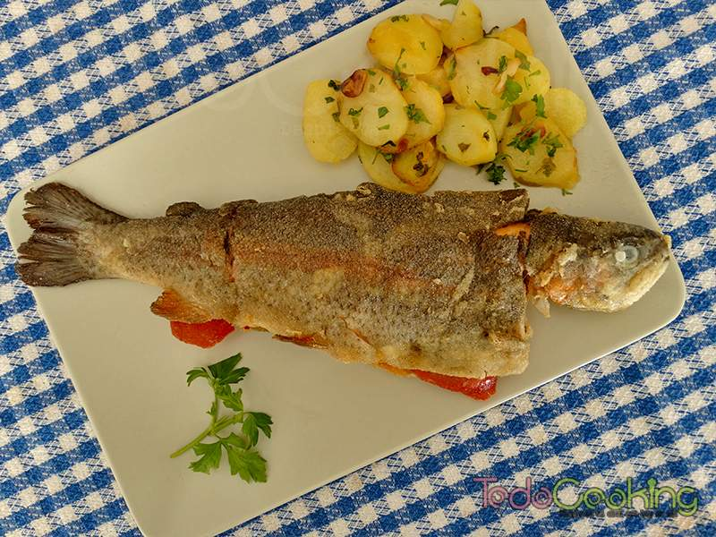

ULTRAINSTINTO
Inicio
Acerca de
Servicios
Contacto
Ser Usuario
Los mejores pescados
Las rabas
Marmitako de atún
Merluza en salsa verde
Percebes
Pulpo a feira
Bonito del norte
Angulas
Bacalao en salsa vizcaína
Kokotxas de merluza al pil pil
Pimientos rellenos de bacalao
Alcachofas con almejas
Trucha a la Navarra
